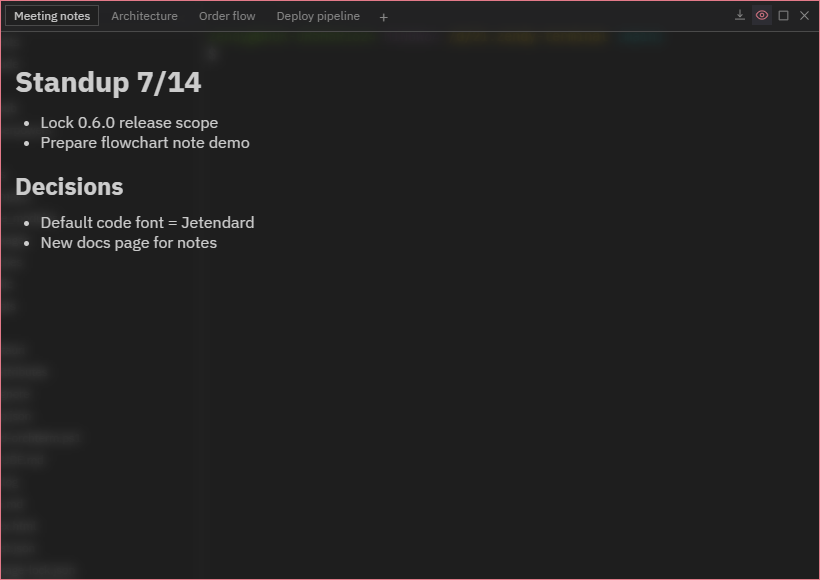
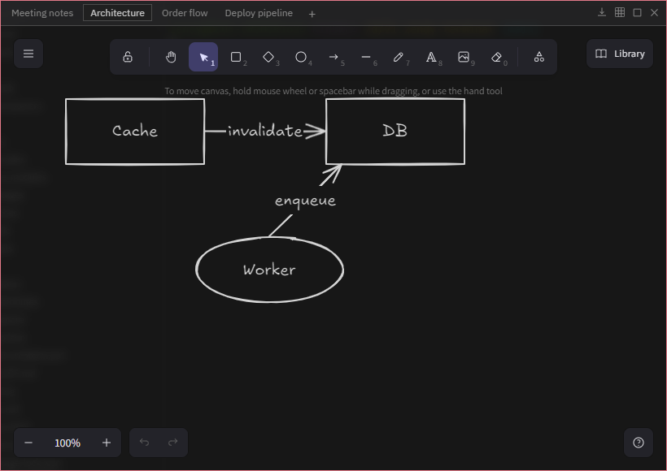
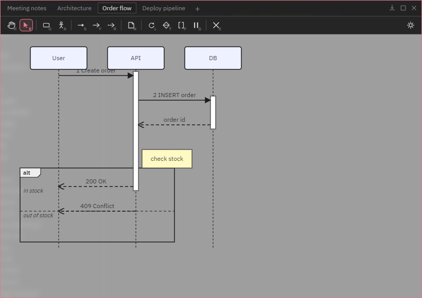
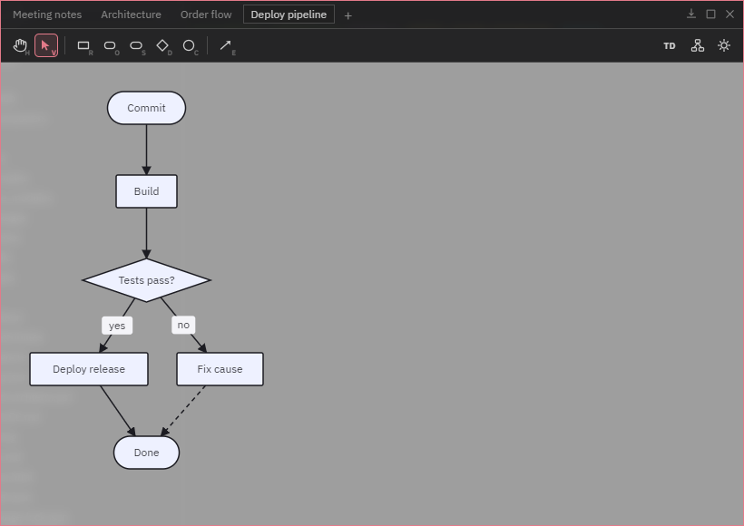

Core features · Notes · Diagrams
Notes · Diagrams
A floating Post-it you keep next to the terminal. Manage Markdown text notes, free-form drawings, drag-to-draw sequence diagrams and flowcharts (bidirectional Mermaid) as tabs — and in-app AI agents read and write the same notes.
Opening the notes panel
Open it with the Notes icon in the titlebar or Ctrl+Shift+N. The panel can be dragged, resized on all 8 edges, and maximized; right-click a tab for rename · color · pin · delete. Notes are global to the app — one shared set across all Spaces.
Create a new note with the + button in the tab row — a menu asks which kind:
| Kind | Content | Export |
|---|---|---|
| Text note | Markdown editing + rendered preview | Save as .md |
| Drawing | Free-form Excalidraw canvas (offline) | PNG · SVG · PDF · clipboard |
| Sequence diagram | Drag-to-draw UML sequence | Mermaid (.mmd) · SVG · PNG · PDF · clipboard |
| Flowchart | Canvas ↔ Mermaid flowchart, bidirectional | Mermaid (.mmd) · SVG · PNG · PDF · clipboard |
Text notes — Markdown
Write the body in Markdown and toggle between editing and the rendered view with the Preview button. With the panel focused, Ctrl+N creates a new note. Text notes can also be expanded into a main-panel tab for more room.

Drawing notes — free-form
An Excalidraw canvas (fully offline — fonts are bundled with the app). Draw shapes, arrows, freehand strokes and text, toggle the grid, and export to PNG/SVG/PDF or the clipboard.

Sequence diagrams — drag-to-draw UML
Place objects and actors from the tool palette, then drag between lifelines to create messages. Synchronous calls auto-create activation bars and their replies; wrap ranges in loop/alt/opt/par frames by dragging a box. Participants and messages can be freely repositioned, and labels are edited by double-clicking. Tool shortcuts are shown as badges on each button (H hand, V select, …).

Export as Mermaid (.mmd) · SVG · PNG · PDF, or copy the Mermaid — the diagram you drew becomes sequenceDiagram text as-is.
Flowcharts — bidirectional Mermaid
Place nodes with the shape tools (R rectangle · O rounded · S stadium · D diamond · C circle) and drag between nodes with the E edge tool. Dragging a node stores its free position; right-click for shape changes, arrow styles (solid/open/dotted/thick) and delete. The toolbar's right side switches direction (TD/LR/BT/RL), runs auto layout, and toggles the light/dark background.

This note kind is bidirectional — drawing on the canvas writes Mermaid flowchart code, and loading Mermaid produced by an AI gives you editable shapes. Hand-placed positions and the background theme aren't part of Mermaid syntax, so they don't appear in the exported text.
AI note sharing
In-app AI agents (claude · codex · gemini) can create, read, update and delete the same notes via the orchterm-notes MCP (on by default — can be disabled in Settings). Ask "summarize this meeting into a note" or "draw this logic as a flowchart" and it appears in the panel.
- Text — read and written as plain Markdown.
- Sequence · Flowchart — written as Mermaid, and reads return real Mermaid, so agents can re-read and edit their own diagrams (full round-trip).
- Drawing — created from Mermaid flowcharts or Excalidraw skeletons (editable shapes); reads return a textual summary.
Unlike AI task sharing, notes are not split per Space — there is one global set.
Shortcuts
| Key | Action |
|---|---|
| Ctrl+Shift+N | Open/close the notes panel (mac Cmd+Shift+N) |
| Ctrl+N | New text note (while the panel is focused) |
| V / H | Diagram canvas — select / hand (pan) tool |
| R O S D C · E | Flowchart — 5 shape tools · edge tool |
| Delete | Diagram canvas — delete selection |
| Shift+Enter | Line break while editing a label inline |